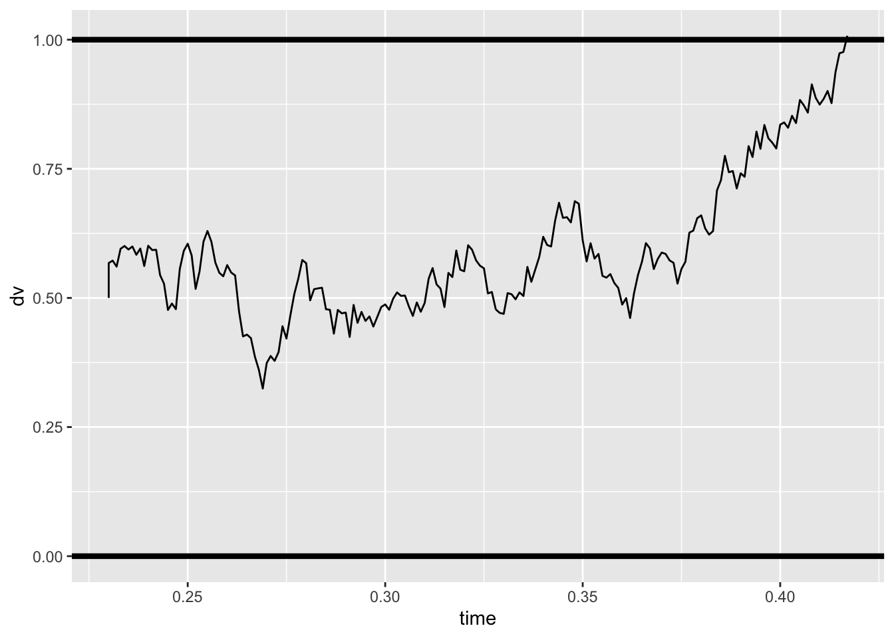
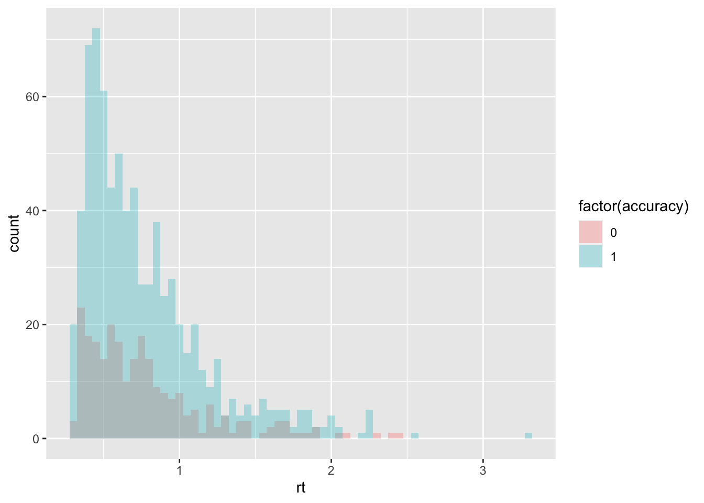
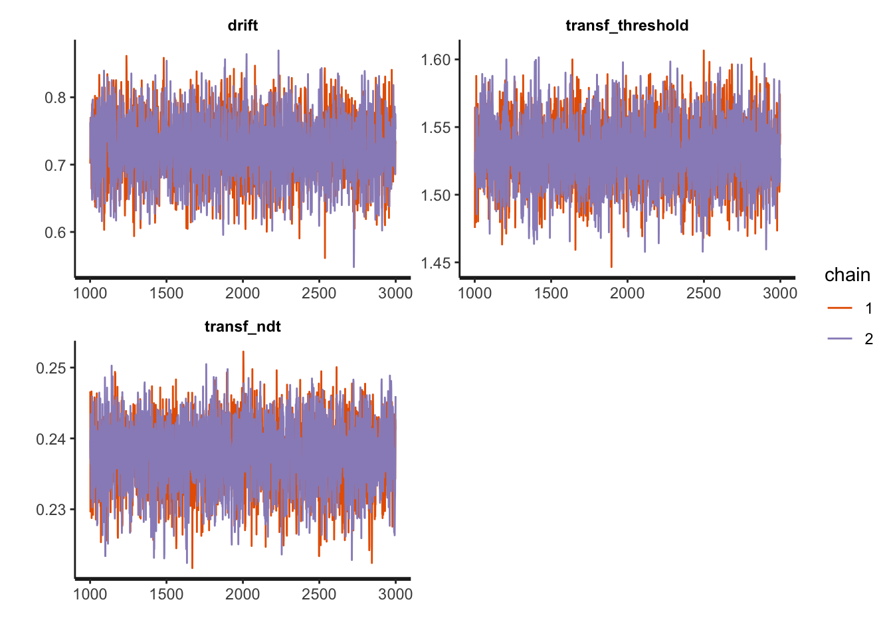
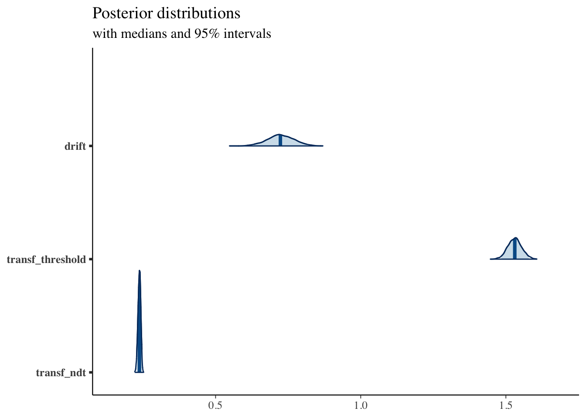

rm(list = ls())
library(tidyverse)
library(dfoptim)
library(rtdists)
library(rstan)
library(bayesplot)We can write down Equation 5 from Bogacz 2006 paper to simulate the process described by the Diffusion Model without across-trial variability:
dm_path <- function(drift, threshold, ndt, rel_sp=.5, noise_constant=1, dt=0.001, max_rt=10) {
max_tsteps <- max_rt/dt
# initialize the diffusion process
tstep <- 0
x <- c(rel_sp*threshold) # vector of accumulated evidence at t=tstep
time <- c(ndt)
# start accumulating
while (0 < x[tstep+1] & x[tstep+1] < threshold & tstep < max_tsteps) {
x <- c(x, x[tstep+1] + rnorm(mean=drift*dt, sd=noise_constant*sqrt(dt), n=1))
time <- c(time, dt*tstep + ndt)
tstep <- tstep + 1
}
return (data.frame(time=time, dv=x))
}And visualize it:
gen_drift = .3
gen_threshold = 1
gen_ndt = .23
sim_path <- dm_path(gen_drift, gen_threshold, gen_ndt)
ggplot(data = sim_path, aes(x = time, y = dv))+
geom_line(size = .5) +
geom_hline(yintercept=gen_threshold, size=1.5) +
geom_hline(yintercept=0, size=1.5)
To have a look at the whole distribution, though, we want to simulate more trials:
random_dm <- function(n_trials, drift, threshold, ndt, rel_sp=.5, noise_constant=1, dt=0.001, max_rt=10) {
acc <- rep(NA, n_trials)
rt <- rep(NA, n_trials)
max_tsteps <- max_rt/dt
# initialize the diffusion process
tstep <- 0
x <- rep(rel_sp*threshold, n_trials) # vector of accumulated evidence at t=tstep
ongoing <- rep(TRUE, n_trials) # have the accumulators reached the bound?
# start accumulating
while (sum(ongoing) > 0 & tstep < max_tsteps) {
x[ongoing] <- x[ongoing] + rnorm(mean=drift*dt,
sd=noise_constant*sqrt(dt),
n=sum(ongoing))
tstep <- tstep + 1
# ended trials
ended_correct <- (x >= threshold)
ended_incorrect <- (x <= 0)
# store results and filter out ended trials
if(sum(ended_correct) > 0) {
acc[ended_correct & ongoing] <- 1
rt[ended_correct & ongoing] <- dt*tstep + ndt
ongoing[ended_correct] <- FALSE
}
if(sum(ended_incorrect) > 0) {
acc[ended_incorrect & ongoing] <- 0
rt[ended_incorrect & ongoing] <- dt*tstep + ndt
ongoing[ended_incorrect] <- FALSE
}
}
return (data.frame(trial=seq(1, n_trials), accuracy=acc, rt=rt))
}And have a look at the average performance and shape of the RT distributions:
sim_data <- random_dm(n_trials=1000, drift=.7, threshold=1.5, ndt=.23)
summary(sim_data)## trial accuracy rt
## Min. : 1.0 Min. :0.000 Min. :0.2790
## 1st Qu.: 250.8 1st Qu.:0.000 1st Qu.:0.4650
## Median : 500.5 Median :1.000 Median :0.6230
## Mean : 500.5 Mean :0.713 Mean :0.7631
## 3rd Qu.: 750.2 3rd Qu.:1.000 3rd Qu.:0.9273
## Max. :1000.0 Max. :1.000 Max. :3.6350ggplot(data = sim_data, mapping = aes(x = rt, fill = factor(accuracy))) +
geom_histogram(binwidth=.05, alpha = .3, position="identity")
The same result can be achieved with the rdiffusion function of the rtdistspackage:
sim_data2 <- rdiffusion(n=1000, a=1.5, v=.7, t0=.23)
sim_data2$accuracy = 0
sim_data2[sim_data2$response=="upper", "accuracy"] = 1
summary(sim_data2)## rt response accuracy
## Min. :0.2768 lower:234 Min. :0.000
## 1st Qu.:0.4593 upper:766 1st Qu.:1.000
## Median :0.6165 Median :1.000
## Mean :0.7275 Mean :0.766
## 3rd Qu.:0.8709 3rd Qu.:1.000
## Max. :3.4000 Max. :1.000An efficient approximation to the likelihood function of the DM can be found in the Navarro & Fuss paper. In the appendix, you can find the matlab code and convert it to R. However, a computationally efficient version of it can be also found in the rtdists package as well. We just need to wrap it to use in the MLE fitting later on:
log_likelihood_dm <- function(par, data, ll_threshold=1e-10) {
density <- ddiffusion(rt=data$rt, response=data$response, a=par[1], v=par[2], t0=par[3])
density[density <= ll_threshold] = ll_threshold # put a threhsold on very low likelihoods for computability
return(sum(log(density)))
}We can thus use the Nelder-Mead algorithm in the dfoptim package to estimate the parameters:
starting_values = c(.5, 1, .1) # set some starting values
print(log_likelihood_dm(starting_values, data=sim_data2)) # check that starting values are plausible## [1] -9451.493fit1 <- nmkb(par = starting_values,
fn = function (x) log_likelihood_dm(x, data=sim_data2),
lower = c(0, -10, 0),
upper = c(10, 10, 5),
control = list(maximize = TRUE))
print(fit1$par) # print estimated parameters## [1] 1.4850084 0.8033710 0.2358612We can also recover the generating parameters of the simulated data with stan, to assess th model’s identifialbility.
First, we need to prepare our data for stan:
sim_data$accuracy_recoded = sim_data$accuracy
sim_data[sim_data$accuracy==0, "accuracy_recoded"] = -1
sim_data_for_stan = list(
N = dim(sim_data)[1],
accuracy = sim_data$accuracy_recoded,
rt = sim_data$rt,
starting_point = 0.5
)And then we can fit the model:
fit1 <- stan(
file = "stan_models/DM.stan", # Stan program
data = sim_data_for_stan, # named list of data
chains = 2, # number of Markov chains
warmup = 1000, # number of warmup iterations per chain
iter = 3000, # total number of iterations per chain
cores = 2 # number of cores (could use one per chain)
)Compare the generating parameters with the recovered ones and check for convergence looking at the Rhat measures:
print(fit1, pars = c("drift", "transf_threshold", "transf_ndt"))## Inference for Stan model: DM.
## 2 chains, each with iter=3000; warmup=1000; thin=1;
## post-warmup draws per chain=2000, total post-warmup draws=4000.
##
## mean se_mean sd 2.5% 25% 50% 75% 97.5% n_eff Rhat
## drift 0.60 0 0.04 0.52 0.58 0.60 0.63 0.69 2809 1
## transf_threshold 1.50 0 0.02 1.45 1.48 1.50 1.51 1.54 2670 1
## transf_ndt 0.24 0 0.00 0.23 0.23 0.24 0.24 0.25 2522 1
##
## Samples were drawn using NUTS(diag_e) at Wed Sep 8 11:58:20 2021.
## For each parameter, n_eff is a crude measure of effective sample size,
## and Rhat is the potential scale reduction factor on split chains (at
## convergence, Rhat=1).And (visually) assess the model’s convergence as well as some more sampling diagnostics:
traceplot(fit1, pars = c("drift", "transf_threshold", "transf_ndt"), inc_warmup = FALSE, nrow = 2)
sampler_params <- get_sampler_params(fit1, inc_warmup = TRUE)
summary(do.call(rbind, sampler_params), digits = 2)## accept_stat__ stepsize__ treedepth__ n_leapfrog__ divergent__ energy__
## Min. :0.00 Min. : 0.0026 Min. :0.0 Min. : 1.0 Min. :0.000 Min. : 827
## 1st Qu.:0.85 1st Qu.: 0.5896 1st Qu.:2.0 1st Qu.: 3.0 1st Qu.:0.000 1st Qu.: 828
## Median :0.95 Median : 0.5913 Median :2.0 Median : 7.0 Median :0.000 Median : 829
## Mean :0.87 Mean : 0.6514 Mean :2.3 Mean : 5.5 Mean :0.005 Mean : 832
## 3rd Qu.:0.99 3rd Qu.: 0.5913 3rd Qu.:3.0 3rd Qu.: 7.0 3rd Qu.:0.000 3rd Qu.: 831
## Max. :1.00 Max. :15.6128 Max. :5.0 Max. :31.0 Max. :1.000 Max. :3444More plotting:
posterior <- as.matrix(fit1)
plot_title <- ggtitle("Posterior distributions",
"with medians and 95% intervals")
mcmc_areas(posterior,
pars = c("drift", "transf_threshold", "transf_ndt"),
prob = 0.95) + plot_title